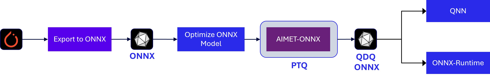
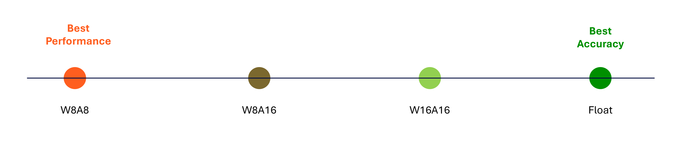
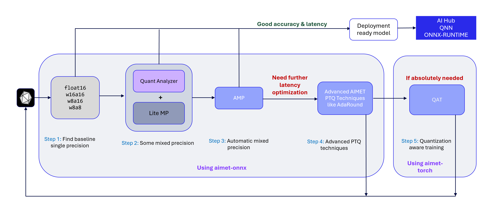
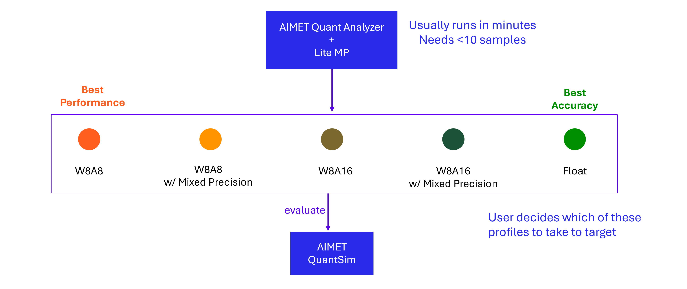

Quantization workflow¶
AIMET offers several quantization techniques to improve the accuracy of quantized models. This section outlines a recommended, streamlined workflow for selecting appropriate techniques for a given model.
Workflow Overview:
Model conversion: If starting with a PyTorch model, use torch.onnx.export to convert it to ONNX. This step can be skipped if an ONNX model is already available.
Graph Optimization (Optional): Apply model simplification passes to optimize the ONNX graph, if needed.
Post-Training Quantization: Use AIMET ONNX to apply post-training quantization techniques.
QDQ Model Export: Export the quantized model as an ONNX QDQ model, which includes QuantizeLinear and DequantizeLinear nodes to encode quantization parameters.
Deployment: The QDQ model can be executed using ONNX Runtime or deployed to downstream toolchains such as the Qualcomm Neural Processing SDK or the Qualcomm AI Runtime SDK.
Note: While this workflow is suitable for a wide range of models, Generative AI models typically require a different approach due to their significantly larger parameter sizes.
Accuracy-vs-Performance Tradeoff¶
Quantization provides several advantages when deploying models on-device compared to their floating-point counterparts:
Faster inference
Reduced memory usage
Lower power consumption
These benefits, however, come with a tradeoff in model accuracy—specifically, the task-specific accuracy the model was originally designed to achieve. For instance, in object detection tasks, this may be measured using metrics such as mean Intersection over Union (mIOU).
In general, the lower the numerical precision used during quantization, the greater the performance gains. However, the lower precision often results in reduced accuracy. The extent of this tradeoff is highly model-dependent. Some models can be quantized to INT8 with minimal impact on accuracy, while others may require higher precision formats to maintain acceptable accuracy.
Detailed Workflow¶
Step 1: Find baseline precision¶
Using the QuantizationSim feature in AIMET ONNX, you can evaluate model accuracy across various precision formats:
w8a8: INT8 weights, INT8 activations
w8a16: INT8 weights, INT16 activations
w16a16: INT16 weights, INT16 activations
fp16: Float 16 weights, Float 16 activations
Based on the accuracy results for each format, you can draw the following conclusions:
Identify the lowest precision that maintains acceptable accuracy. If latency at this precision is also acceptable, the model is ready for deployment.
If w8a8 yields poor accuracy but w8a16 performs well, the model is likely sensitive to activation quantization at INT8.
If w8a16 yields poor accuracy but w1616 performs well, the model is likely sensitive to weight quantization at INT8.
If only fp16 maintains acceptable accuracy, the model likely contains layers that are highly sensitive to quantization — either in weights, activations, or both.
If the baseline model you found does not give you the desired on-target latency and/or you would like to find a more performant model, continue to Step 2.
Step 2: Use lite mixed precision¶
Empirical evidence across a broad range of models suggests that only a small subset of layers are typically sensitive to quantization. This insight can be leveraged to achieve a lower-precision model than what may have been identified in Step 1.
In this step, we aim to find more performant model configurations than those explored in Step 1
AIMET QuantAnalyzer identifies layers that are most sensitive to quantization and generates a per-layer sensitivity report.
AIMET LiteMP uses this report to selectively assign higher precision (e.g., FP16) to a configurable percentage of the most sensitive layers.
For example, if Step 1 showed poor accuracy at w8a8 but acceptable accuracy at w8a16, QuantAnalyzer + LiteMP can be used to keep most layers at w8a8 while elevating only the most sensitive ones to FP16.
Similarly we could also configure a model with base w8a16 precision and a small percentage of the layers in fp16.
These models can be evaluated using AIMET QuantSim to determine if they meet the desired accuracy.
We can keep increasing the percentage of layers to flip to higher precision, and evaluate using AIMET QuantSim, till we find a model mixed precision profile that meets desired accuracy.
LiteMP can be iteratively adjusted to fine-tune the balance between accuracy and latency.
At the end of this step, very likely you have found a model which meets desired accuracy. We can export this model and run on target to determine on-target latency. If the latency meets expectations, we can stop.
Else if we desire to find a more performant model, continue to Step 3
Step 3: Use Automatic Mixed Precision (AMP)¶
In the previous step, we applied the LiteMP feature in AIMET ONNX to perform basic mixed precision optimization. For a more advanced approach, AIMET offers the Automatic Mixed Precision (AMP) feature, which runs a comprehensive search to identify an optimal mixed precision profile. Note that AMP requires significantly more time than LiteMP.
Key benefits of AMP:
Supports multiple precision candidates. For example, a suggested candidate set that is observed to work for a wide range of models is (w8a8, w8a16, float16)
Allows users to define an accuracy threshold, which guides the algorithm to try and find a profile that meets that target threshold
For most models, AMP yields a well-balanced profile that maintains near-floating-point accuracy while improving latency through integer precision.
If further performance gains are needed, proceed to Step 4.
Step 4: Use advanced Post-Training Quantization (PTQ) techniques¶
If the model exhibits sensitivity to weight quantization—evident when accuracy is high with w16a16 but degrades with w8a16—AIMET provides advanced post-training quantization techniques to improve performance.
A recommended next step is to apply Adaptive Rounding (AdaRound). This method performs layer-wise optimization to learn a rounding matrix for the weights, which is then folded into the model. The result is a quantized model with improved accuracy, as evaluated using AIMET’s QuantSim.
After applying AdaRound, repeat Steps 1 through 3 to reassess model accuracy, apply mixed precision if needed, and proceed with deployment.
Step 5: Use Quantization-Aware Training (QAT)¶
From our experience, most models are able to quantize to integer precisions (w8a8 or w8a16) with the above post-training quantization steps. Very rarely, if there is a need to improve latency by keeping most or all of the model in w8a8 or w8a16 precision, Quantization Aware Training (QAT) might be needed.
Do note that QAT is a relatively heavy workflow that requires the users to tweak training hyperparameters and manually guide the training process to get good results. This is very similar to the effort needed for model training. In addition, QAT generally takes a lot more time to converge and complete compared to post-training quantization techniques.
To use QAT, the recommended way is to use AIMET Torch’s QAT feature to train the model in PyTorch. After QAT is complete, we export the AIMET Torch simulation model to an ONNX along with corresponding quantization encodings. Then we repeat Steps 1 through 3 to reassess model accuracy, apply mixed precision if needed, and proceed with deployment.
Next: Deploying the model¶
After we have completed the quantization workflow, we have a deployment ready model exported from AIMET. This model can be deployed to target - for example using the Qualcomm AI Runtime SDK or Qualcomm AI Hub.